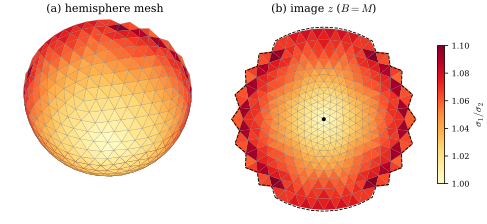
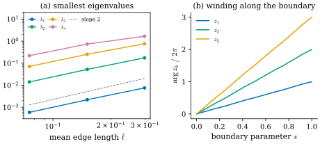
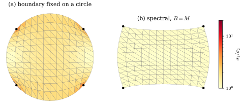

43.5 Discrete Conformal Parametrization
Goals
- disk 모양 mesh 위의 piecewise linear map에서 Dirichlet energy와 signed area를 정확히 계산하고, discrete conformal energy를 Hermitian matrix로 쓸 수 있다.
- discrete conformal energy가 positive semidefinite이고 kernel이 무엇인지 증명하고, 상수 map이라는 자명한 최솟점을 피하는 두 방법(두 vertex 고정, eigenproblem)을 설명할 수 있다.
- spectral conformal parametrization이 generalized eigenproblem의 가장 작은 nontrivial eigenvector임을 증명하고, inverse power iteration으로 구현할 수 있다.
- face마다의 \(\sigma_1/\sigma_2\)로 결과를 평가하고, boundary를 고정한 경우와 자유로운 경우를 비교할 수 있다.
Prerequisites
- Theorem 43.4.6, Proposition 43.4.7, Corollary 43.4.8, Theorem 43.4.10: \(E_C = E_D - \mathcal{A}\)와 boundary의 역할
- Proposition 43.1.4, Corollary 43.1.5: 각을 정확히 보존하는 piecewise linear map의 rigidity
- Corollary 42.3.6: \(-u^{\mathsf T}Lu = \int\abs{\grad W_0u}^2\), Proposition 42.5.7: \(-L_{II}\)의 positive definiteness, Proposition 42.6.1: \(-L + aa^{\mathsf T}\)
- Definition 31.6.1, Proposition 31.6.3: UV map의 singular value와 LSCM
- Definition 36.3.8: piecewise linear interpolation \(W_0\)
Motivation
Section 43.4는 conformal energy \(E_C = E_D - \mathcal{A}\)가 Dirichlet energy와 boundary만 보는 signed area의 차이라는 것을 증명했다. 둘 다 Chapter 42와 Chapter 36의 도구로 mesh 위에서 정확히 계산할 수 있는 양이다. 그러면 surface mesh를 평면에 conformal하게 펴는 문제는 \(\mathbb{C}^{n_0}\) 위의 Hermitian quadratic form을 최소화하는 문제가 된다. 남은 문제는 Section 43.4의 끝에서 본 두 함정이다. boundary를 모두 고정하면 harmonic map이 나와 각이 깨지고, 아무것도 고정하지 않으면 상수 map이 \(E_C = 0\)으로 이긴다.
이 절은 그 사이의 두 해법을 증명하고 구현한다. 하나는 vertex 두 개만 고정하는 least squares conformal map(LSCM) [Levy02]이고, Section 31.6에서 이미 썼다. 다른 하나는 “평균이 \(0\)이고 크기가 \(1\)”이라는 가장 약한 조건만 주고 eigenvector를 구하는 spectral conformal parametrization [Mullen08]이다. Crane의 노트도 같은 문제를 eigenproblem으로 풀고 inverse power iteration(역거듭제곱법)을 쓴다 [Cr §7.5].
The Discrete Conformal Energy
Section 43.4의 두 양을 piecewise linear map에서 계산하자. 두 결과 모두 근사가 아니라 정확한 값이다.
Proposition 43.5.1 (Dirichlet energy and signed area of a piecewise linear map). disk 모양 mesh와 \(z \in \mathbb{C}^{n_0}\)에 대하여
(a) \(E_D(W_0z) = -\tfrac12z^{\mathsf H}Lz\)이다.
(b) \(\mathcal{A}(W_0z) = \sum_f\mathcal{A}_f(z)\)이고, face \(f = (i, j, k)\)의 image triangle의 signed area는 \(\mathcal{A}_f(z) = \tfrac12\operatorname{Im}\big(\overline{(z_j - z_i)}(z_k - z_i)\big)\)이다.
(c) 그리고
이다. 합은 boundary edge를 위의 orientation으로 센 것이다.
Proof idea: (c)는 (43.4.7)의 discrete 판이다. 각 face의 signed area를 그 세 edge의 합으로 쓰면, interior edge는 이웃한 두 face에서 반대 방향으로 한 번씩 나타나 지워지고 boundary edge만 남는다.
Proof. (a) \(W_0z = W_0u + \mathrm{i}W_0v\)(\(u = \operatorname{Re}z\), \(v = \operatorname{Im}z\))이고 \(E_D(W_0z) = E_D(W_0u) + E_D(W_0v)\)((43.4.5))이다. Corollary 42.3.6으로 각각 \(-\tfrac12u^{\mathsf T}Lu\), \(-\tfrac12v^{\mathsf T}Lv\)이다. \(L\)이 실수 symmetric이므로 \(z^{\mathsf H}Lz = (u - \mathrm{i}v)^{\mathsf T}L(u + \mathrm{i}v) = u^{\mathsf T}Lu + v^{\mathsf T}Lv\)이다(교차항 \(\mathrm{i}(u^{\mathsf T}Lv - v^{\mathsf T}Lu) = 0\)). (b) face \(f\) 위에서 \(W_0z\)는 affine이고, Proposition 43.4.7(a)로 \(\int_fdu\wedge dv = A_f\det(dz|_f)\)이다. affine map은 넓이를 \(\det\)배 하므로 이것은 image triangle의 넓이에 orientation의 부호를 붙인 것, 곧 \(\tfrac12\det\big[z_j - z_i,\ z_k - z_i\big]\)(두 변을 \(\R^2\)의 열로 쓴 determinant)이다. \(\R^2\)의 \(a, b\)에 대해 \(\det[a, b] = \operatorname{Im}(\bar ab)\)이므로 식이 나온다. (c) \(\operatorname{Im}(\bar ab)\)는 \(a, b\)에 대해 real-bilinear이고 antisymmetric이다(\(\operatorname{Im}(\bar ba) = -\operatorname{Im}(\bar ab)\)). 전개하면 \(\operatorname{Im}\big(\overline{(z_j - z_i)}(z_k - z_i)\big)\) \(= \operatorname{Im}(\bar z_iz_j) + \operatorname{Im}(\bar z_jz_k) + \operatorname{Im}(\bar z_kz_i)\)이다(\(\operatorname{Im}(\bar z_iz_i) = 0\)을 쓴다). 곧 \(2\mathcal{A}_f\)는 face의 세 edge \(i \to j \to k \to i\)에 대한 \(\operatorname{Im}(\bar z_az_b)\)의 합이다. 모든 face에서 더하자. interior edge \(\{a, b\}\)는 두 face에 있고, orientation이 일관되므로 한 face는 \(a \to b\), 다른 face는 \(b \to a\)로 지난다(Section 33.3). 두 항 \(\operatorname{Im}(\bar z_az_b) + \operatorname{Im}(\bar z_bz_a) = 0\)이 지워지고, face 하나에만 있는 boundary edge가 그 face의 방향으로 남는다.
(c)의 계산은 Stokes's theorem을 mesh에서 정의로 삼은 Chapter 36의 생각과 같다. interior의 모든 값이 사라지고 boundary 값만 남는다. 이제 (a)와 (c)를 합치면 conformal energy가 \(z\)의 Hermitian quadratic form이 된다.
Definition 43.5.2 (discrete conformal energy). disk 모양 mesh와 \(z \in \mathbb{C}^{n_0}\)에 대하여
을 \(z\)의 discrete conformal energy(이산 등각 에너지)라 한다. \(\mathsf{A}\)의 나머지 성분은 \(0\)이다.
\(z^{\mathsf H}\mathsf{A}z = \sum_{(i,j)\in\partial}\big(-\tfrac{\mathrm{i}}{4}\bar z_iz_j + \tfrac{\mathrm{i}}{4}\bar z_jz_i\big)\)이고, \(w = \bar z_iz_j\)라 하면 괄호는 \(-\tfrac{\mathrm{i}}{4}(w - \bar w) = \tfrac12\operatorname{Im}w\)이므로 둘째 등호가 성립한다. \(\mathsf{A}_{ji} = \overline{\mathsf{A}_{ij}}\)이므로 \(\mathsf{A}\)와 \(\mathsf{E}_C\)는 Hermitian이다. 정의의 오른쪽이 Proposition 43.5.1에 의해 smooth의 \(E_D(W_0z) - \mathcal{A}(W_0z)\)이므로, Theorem 43.4.6으로 이것은 정확히 piecewise linear map의 smooth conformal energy다. 다음 명제가 그 성질을 정리한다.
Proposition 43.5.3 (properties of the discrete conformal energy). disk 모양 mesh에서
(a) \(E_C(z)\) \(= E_C(W_0z)\) \(= \sum_fA_f\,\tfrac12\big((u_x - v_y)^2 + (u_y + v_x)^2\big)\)이다. 여기서 \(u_x, \dots\)는 face \(f\) 위의 \(W_0z\)의 partial derivative(face의 positively oriented orthonormal frame)이고, face마다의 항은 \(A_f\tfrac12(\sigma_1 - \sigma_2)^2\)(orientation을 지키는 face) 또는 \(A_f\tfrac12(\sigma_1 + \sigma_2)^2\)(뒤집힌 face)이다.
(b) \(\mathsf{E}_C\)는 Hermitian positive semidefinite이다.
(c) \(\mathsf{E}_C\mathbf{1} = 0\)이다. 또 모든 \(a, c \in \mathbb{C}\)에서 \(E_C(az + c\mathbf{1}) = \abs{a}^2E_C(z)\)이다.
(d) \(E_C(z) = 0\)인 것은 모든 face가 orientation을 지키는 similarity로 옮겨지거나 한 점으로 모이는 것과 같다. 따라서 \(\delta_i \notin 2\pi\Z\)인 interior vertex가 하나라도 있으면 \(\ker\mathsf{E}_C = \Span\{\mathbf{1}\}\)이다.
Proof. (a) 첫 등호는 위의 문단이고, 둘째는 Corollary 43.4.8을 face마다 적분한 것이다(face 위에서 밀도가 상수다). (b) (a)의 각 항이 \(0\) 이상이다. (c) \(L\mathbf{1} = 0\)이다. \((\mathsf{A}\mathbf{1})_i\)는 \(i\)에서 나가는 boundary edge의 \(-\tfrac{\mathrm{i}}{4}\)와 \(i\)로 들어오는 boundary edge의 \(\tfrac{\mathrm{i}}{4}\)의 합이다. boundary vertex마다 boundary edge가 정확히 하나씩 나가고 들어오므로(boundary가 loop 하나) \(0\)이고, interior vertex에서는 항이 없다. 둘째: \(\mathsf{E}_C\)가 Hermitian이고 \(\mathsf{E}_C\mathbf{1} = 0\)이므로 \(\mathbf{1}^{\mathsf H}\mathsf{E}_C = 0\)이고, 전개하면 \((az + c\mathbf{1})^{\mathsf H}\mathsf{E}_C(az + c\mathbf{1}) = \abs{a}^2z^{\mathsf H}\mathsf{E}_Cz\)이다. (d) (a)에서 \(E_C(z) = 0\)은 모든 face에서 \((u_x - v_y)^2 + (u_y + v_x)^2 = 0\), 곧 face의 differential이 Cauchy–Riemann을 만족하는 것이다. 그런 real-linear map은 \(\alpha\cdot\)(Lemma 43.2.1(a))이고, \(\alpha \ne 0\)이면 orientation을 지키는 similarity, \(\alpha = 0\)이면 한 점으로 모이는 map이다. 이제 \(\delta_i \notin 2\pi\Z\)인 interior vertex가 있고 \(E_C(z) = 0\)이라 하자. 어떤 face에서 \(\alpha_f = 0\)이면 그 face의 세 vertex 값이 같고, edge를 공유하는 face는 그 edge의 두 끝 값이 같으므로 \(\alpha = 0\)일 수밖에 없다(similarity는 서로 다른 점을 서로 다른 점으로 보낸다). connected mesh를 따라가면 모든 face에서 \(\alpha_f = 0\)이고 \(z\)는 상수다. 모든 face에서 \(\alpha_f \ne 0\)이면 \(z\)는 Proposition 43.1.4의 map이고, Corollary 43.1.5에 어긋난다. 따라서 \(\ker\mathsf{E}_C\)는 상수뿐이다(PSD Hermitian matrix에서 \(z^{\mathsf H}\mathsf{E}_Cz = 0\)과 \(\mathsf{E}_Cz = 0\)은 동치다).
Example 43.5.4 (planar meshes).
평면 mesh(vertex \(p_i \in \mathbb{C}\), counterclockwise face)에서 항등 map \(z = p\)는 모든 face가 similarity(항등)로 가므로 \(E_C(p) = 0\)이다. \(E_D(p) = \mathcal{A}(p) = \)(mesh의 넓이)이기 때문이다. 켤레 \(z = \bar p\)는 모든 face를 뒤집으므로 (a)의 항이 \(A_f\tfrac12(1 + 1)^2 = 2A_f\)이고 \(E_C(\bar p) = 2\cdot\)(넓이)이다. 예를 들어 dgmesh.grid_mesh로 만든 unit square의 \(6\times6\) 격자에서 \(E_C(p)\)는 round-off 수준(\(10^{-15}\) 이하)이고 \(E_C(\bar p) = 2.000\)이다. 평면 mesh에서는 \(\delta_i = 0\)이므로 (d)의 가정이 성립하지 않고, 실제로 \(\ker\mathsf{E}_C = \Span\{\mathbf{1}, p\}\)이다(Exercise 43.5.3).
Verification: verify/v-43-5-discrete-conformal.py
Non-example 43.5.5 (the trivial minimizers). constraint 없이 \(E_C\)를 최소화하면 답은 상수 map \(z = c\mathbf{1}\)이다(Proposition 43.5.3(b)(c), \(E_C = 0\)). 크기만 정해 \(\norm{z}_B = 1\)을 요구해도 상수 \(z = \mathbf{1}/\norm{\mathbf{1}}_B\)가 \(E_C = 0\)으로 이긴다. 거꾸로 boundary vertex를 모두 고정하면 답은 harmonic extension이고(Theorem 43.4.10의 discrete 판. \(\mathsf{A}\)는 interior 성분이 없으므로 interior 행의 방정식은 \((Lz)_I = 0\)이다), 고정한 boundary가 맞지 않으면 각이 깨진다(아래 Example 43.5.12). 이 둘 사이에서 constraint를 골라야 한다 [Cr §7.4].
Proposition 43.5.6 (two pinned vertices: LSCM). \(\ker\mathsf{E}_C = \Span\{\mathbf{1}\}\)이라 하자. 서로 다른 vertex \(p, q\)와 복소수 \(\zeta_p \ne \zeta_q\)에 대해 \(z_p = \zeta_p\), \(z_q = \zeta_q\)인 \(z\) 가운데 \(E_C\)의 최솟점은 하나뿐이고, 나머지 성분 \(z_R\)(\(R\)은 \(p, q\)를 뺀 vertex)은 \(\mathsf{E}_{RR}z_R = -\mathsf{E}_{R\{p,q\}}(\zeta_p, \zeta_q)^{\mathsf T}\)의 해다. 고정한 값을 similarity \(\zeta \mapsto a\zeta + c\)(\(a \ne 0\))로 바꾸면 해 전체가 같은 similarity로 바뀐다.
Proof. \(\mathsf{E}_{RR}\)(\(R\)의 행과 열)이 positive definite임을 보이면 된다. 그러면 \(z_R\)의 2차식 \(E_C\)는 strictly convex이고 유일한 최솟점이 gradient가 \(0\)인 점, 곧 위의 linear system의 해다. \(y_R \ne 0\)이고 \(y\)를 \(R\)에서 \(y_R\), \(p, q\)에서 \(0\)인 vector라 하면 \(y_R^{\mathsf H}\mathsf{E}_{RR}y_R = y^{\mathsf H}\mathsf{E}_Cy \ge 0\)이다. 등호이면 \(y \in \ker\mathsf{E}_C\)이므로 상수이고, \(p\)에서 \(0\)이므로 \(y = 0\)이 되어 모순이다. 마지막 문장: \(z\)가 최솟점이면 \(az + c\mathbf{1}\)은 새 constraint를 만족하고 \(E_C(az + c\mathbf{1}) = \abs{a}^2E_C(z)\)이다(Proposition 43.5.3(c)). 새 constraint를 만족하는 \(w\)마다 \((w - c\mathbf{1})/a\)는 원래 constraint를 만족하므로 \(E_C(w) = \abs{a}^2E_C((w - c\mathbf{1})/a) \ge \abs{a}^2E_C(z)\)이고, 따라서 \(az + c\mathbf{1}\)이 새 최솟점이다.
similarity의 자유도(실수 parameter 4개)를 vertex 두 개의 위치(실수 4개)로 정확히 없앤 것이다. 그러나 답은 어느 두 vertex를 고르는지에 의존하고, 고정한 vertex 근처에서 왜곡이 커지기 쉽다 [Mullen08](§3.1). Section 31.6은 boundary에서 가장 먼 두 vertex를 골랐다.
Spectral Conformal Parametrization
vertex를 고르지 않는 방법이 있다. 상수 map을 막는 가장 약한 두 조건은 “무게중심이 원점이다”와 “크기가 \(1\)이다”이다. 둘 다 무게 \(B\)로 잰다 [Cr §7.4].
Definition 43.5.7 (spectral conformal parametrization). disk 모양 mesh와 \(0\)이 아닌 \(b \in \R_{\ge0}^{n_0}\), \(B = \diag(b)\)에 대하여 문제
의 해를 \(B\)에 대한 spectral conformal parametrization(스펙트럼 등각 매개화)라 한다. 이 절에서 쓰는 \(B\)는 둘이다. (i) \(B = M\): \(b_i\)는 barycentric dual area(lumped mass, Definition 42.3.11)이고, 그러면 \(\norm{z}_M^2 \approx \int\abs{W_0z}^2\,dA\)이다 [Cr §7.5]. (ii) \(B = B_\partial\): boundary vertex에서 \(b_i = 1\), 나머지에서 \(0\) [Mullen08](§3.3).
\(\langle z, \mathbf{1}\rangle_B = \sum_ib_iz_i = 0\)은 \(B\)로 가중한 무게중심이 원점이라는 뜻이고, 상수 성분을 없앤다. \(\norm{z}_B = 1\)은 image가 한 점으로 줄어드는 것을 막는다. 둘 다 회전 \(z \mapsto e^{\mathrm{i}\vartheta}z\)에 대해 불변이므로 해는 회전 하나만큼 정해지지 않는다. 그 이상의 선택(어느 vertex를 어디에)은 하지 않는다. 이 문제의 답은 eigenvector다.
Theorem 43.5.8 (the minimizer is the first nontrivial eigenvector). \(\ker\mathsf{E}_C = \Span\{\mathbf{1}\}\)이고 \(B = M\)(모든 \(b_i \gt 0\))이라 하자. generalized eigenproblem \(\mathsf{E}_Cz = \lambda Mz\)의 eigenvalue는 실수이고 \(0 = \lambda_0 \lt \lambda_1 \le \lambda_2 \le \cdots\)이며, \(\lambda_0\)의 eigenvector는 상수다. (43.5.3)의 최솟값은 \(\lambda_1\)이고, 최솟점은 정확히 \(\lambda_1\)의 eigenspace에 속하는 \(M\)-unit vector다.
Proof idea: \(y = M^{1/2}z\)로 바꾸면 generalized eigenproblem이 보통의 Hermitian eigenproblem이 되고, constraint는 “상수 eigenvector에 수직인 unit vector”가 된다. 그 위에서 Rayleigh quotient의 최솟값은 다음 eigenvalue다.
Proof. \(M^{\pm1/2} = \diag(b_i^{\pm1/2})\)로 두고 \(\hat{\mathsf{E}} := M^{-1/2}\mathsf{E}_CM^{-1/2}\)라 하자. \(\hat{\mathsf{E}}\)는 Hermitian이고, \(y^{\mathsf H}\hat{\mathsf{E}}y = z^{\mathsf H}\mathsf{E}_Cz \ge 0\)(\(z = M^{-1/2}y\))이므로 positive semidefinite다. \(\mathsf{E}_Cz = \lambda Mz\)는 \(\hat{\mathsf{E}}y = \lambda y\)와 동치이므로, spectral theorem으로 eigenvalue는 실수이고 orthonormal eigenvector \(y_0, y_1, \dots\)가 있다(\(\hat{\mathsf{E}}y_k = \lambda_ky_k\), \(\lambda_0 \le \lambda_1 \le \cdots\)). \(\ker\hat{\mathsf{E}} = M^{1/2}\ker\mathsf{E}_C = \Span\{M^{1/2}\mathbf{1}\}\)이므로 \(\lambda_0 = 0\), \(y_0 = M^{1/2}\mathbf{1}/\norm{\mathbf{1}}_M\)이고 나머지는 \(\lambda_k \gt 0\)이다. constraint는 \(\langle z, \mathbf{1}\rangle_M = (M^{1/2}\mathbf{1})^{\mathsf H}y = 0\), \(\norm{z}_M = \abs{y} = 1\)이므로 \(y = \sum_{k\ge1}c_ky_k\), \(\sum_k\abs{c_k}^2 = 1\)이다. 그러면
\[ E_C(z) = y^{\mathsf H}\hat{\mathsf{E}}y = \sum_{k\ge1}\lambda_k\abs{c_k}^2 \ge \lambda_1\sum_{k\ge1}\abs{c_k}^2 = \lambda_1 \]
이고, 등호는 \(\lambda_k \gt \lambda_1\)인 모든 \(k\)에서 \(c_k = 0\), 곧 \(y\)가 \(\lambda_1\)의 eigenspace에 있을 때뿐이다. \(z = M^{-1/2}y\)로 돌아가면 된다.
Section 31.4와 Chapter 42가 \(-L\varphi = \lambda M\varphi\)를 풀 때 쓴 \(M^{-1/2}\) symmetrization(Proposition 31.4.2의 Derivation, dgmesh.generalized_eigs)와 같은 생각이다. \(B = B_\partial\)이면 \(B\)가 singular라서 위의 symmetrization을 쓸 수 없다. 그 경우는 interior를 먼저 없애면 된다.
Proposition 43.5.9 (boundary mass: the interior is harmonic). \(\ker\mathsf{E}_C = \Span\{\mathbf{1}\}\)이고 interior vertex가 하나 이상이라 하자. \(B = B_\partial\)일 때 (43.5.3)의 최솟점 \(z\)는 다음을 만족한다. (a) interior에서 discrete harmonic이다. 곧 \((Lz)_I = 0\)이고 \(z_I = -L_{II}^{-1}L_{I\partial}z_\partial\)이다. (b) boundary 값 \(z_\partial\)는 Schur complement \(S := \mathsf{E}_{\partial\partial} - \mathsf{E}_{\partial I}\mathsf{E}_{II}^{-1}\mathsf{E}_{I\partial}\)에 대한 Theorem 43.5.8의 문제(boundary vertex마다 무게 \(1\), 곧 \(\sum_{\partial}z_i = 0\), \(\sum_\partial\abs{z_i}^2 = 1\))의 최솟점이다. (c) 따라서 \(\mathsf{E}_Cz = \lambda B_\partial z\)가 \(\lambda = E_C(z)\)로 성립한다.
Proof. \(\mathsf{A}\)는 boundary vertex 사이의 성분만 가지므로 \(\mathsf{E}_{II} = -\tfrac12L_{II}\), \(\mathsf{E}_{I\partial} = -\tfrac12L_{I\partial}\)이고, Proposition 42.5.7로 \(\mathsf{E}_{II}\)는 positive definite다. constraint는 \(z_\partial\)만 쓴다. \(z_\partial\)를 고정하면 \(E_C(z)\)는 \(z_I\)의 strictly convex 2차식이고, 완전제곱으로 \(E_C(z) = (z_I - z_I^*)^{\mathsf H}\mathsf{E}_{II}(z_I - z_I^*) + z_\partial^{\mathsf H}Sz_\partial\), \(z_I^* = -\mathsf{E}_{II}^{-1}\mathsf{E}_{I\partial}z_\partial = -L_{II}^{-1}L_{I\partial}z_\partial\)이다(전개해 비교한다). 따라서 최솟점에서 \(z_I = z_I^*\)이고((a)), 남는 문제는 \(z_\partial^{\mathsf H}Sz_\partial\)의 최소화다((b)). \(S\)는 Hermitian이고 \(z_\partial^{\mathsf H}Sz_\partial = \min_{z_I}E_C \ge 0\)이며, 값이 \(0\)이면 extension \(z\)가 \(E_C(z) = 0\)이라 상수이므로 \(\ker S = \Span\{\mathbf{1}_\partial\}\)이다. 그러면 Theorem 43.5.8의 증명을 \(M\) 대신 boundary 위의 identity matrix로 쓰면 된다. (c) interior 행은 \((\mathsf{E}_Cz)_I = \mathsf{E}_{II}z_I + \mathsf{E}_{I\partial}z_\partial = 0 = \lambda(B_\partial z)_I\)이다. boundary 행은 \((\mathsf{E}_Cz)_\partial = Sz_\partial\)(\(z_I = z_I^*\)를 넣는다)이고, (b)에서 \(z_\partial\)가 \(S\)의 eigenvector이므로 \(Sz_\partial = \lambda z_\partial = \lambda(B_\partial z)_\partial\)이다.
(a)가 \(B_\partial\)의 뜻을 보여 준다. interior는 언제나 boundary 값의 discrete harmonic extension이고, eigenproblem은 boundary 위의 값만 고른다. 곧 Section 43.4의 Theorem 43.4.10이 말한 “boundary를 고정하면 harmonic”을 거꾸로 쓴 것이다. boundary를 미리 고정하지 않고, harmonic extension의 conformal energy가 가장 작아지는 boundary 값을 고른다. \(B = M\)에서는 interior 행이 \((\mathsf{E}_Cz)_I = \lambda(Mz)_I \ne 0\)이므로 interior가 정확히 harmonic이지는 않다. 실제 계산에서 두 선택의 차이는 작다(아래 예와 Exercise 43.5.5).
Remark 43.5.10 (inverse power iteration).
큰 mesh에서는 eigenvector 하나만 필요하므로 모든 eigenvalue를 구하지 않고 inverse power iteration을 쓴다 [Cr §7.5]. \(y \leftarrow \mathsf{E}_C^{-1}By\)를 되풀이하면 \(\lambda_1\)이 아닌 성분이 한 step마다 \(\lambda_1/\lambda_k\)배로 준다. \(\mathsf{E}_C\)는 singular이므로 그대로 풀 수 없다. 대신 \(\mathsf{E}_b := \mathsf{E}_C + bb^{\mathsf T}\)(\(b = B\mathbf{1}\), 코드의 Eb)를 쓴다. Gaussian curvature \(K\)와 헷갈리지 않도록 이 행렬에는 \(K\)를 쓰지 않는다. \(\mathsf{E}_b\)는 positive definite이고(\(\ker\mathsf{E}_C = \Span\{\mathbf{1}\}\)에서 \(b^{\mathsf T}\mathbf{1} \gt 0\)), \(\langle y, \mathbf{1}\rangle_B = 0\)이면 \(\mathsf{E}_bx = By\)의 해는 \(\mathsf{E}_Cx = By\)와 \(\langle x, \mathbf{1}\rangle_B = 0\)을 함께 만족한다. 왼쪽에 \(\mathbf{1}^{\mathsf H}\)를 곱하면 \(\mathbf{1}^{\mathsf H}\mathsf{E}_C = 0\)이므로 \((\mathbf{1}^{\mathsf T}b)(b^{\mathsf T}x) = \mathbf{1}^{\mathsf T}By = 0\)이기 때문이다. 이것은 닫힌 mesh의 Poisson 문제에서 쓴 \(-L + aa^{\mathsf T}\)(Proposition 42.6.1)와 같은 trick이고, \(B = B_\partial\)에서도 그대로 쓰인다. 실제로는 \(\mathsf{E}_b\)를 한 번 factorize하고 매 step은 triangular solve만 한다 [Cr §7.5.1]. 이 study set의 코드는 scipy를 쓸 수 없으므로 작은 mesh에서 매 step numpy.linalg.solve를 부른다. Mullen 등은 같은 문제를 \(\mu = 1/\lambda\)의 가장 큰 eigenvalue 문제로 바꾸어 푼다 [Mullen08](§3.4).
Results and Evaluation
결과는 face마다의 \(\sigma_1/\sigma_2\)로 평가한다(Definition 31.6.1의 singular value. surface에서 평면으로 가는 방향이든 그 반대든 비는 같다). \(1\)이면 그 face가 similarity로 갔다는 뜻이다. 이 양은 quasi-conformal distortion이라 부르기도 한다.
Example 43.5.11 (the hemisphere). Implementation 상자의 mesh는 icosphere(3)에서 무게중심이 \(z \lt 0\)인 face 624개(vertex 337개)다. boundary가 적도 근처의 톱니 모양이고 interior vertex의 angle defect가 \(0\)이 아니므로 \(\ker\mathsf{E}_C = \Span\{\mathbf{1}\}\)이다(Proposition 43.5.3(d)). \(B = M\)의 결과는 \(\lambda_1 = 2.194\times10^{-3}\), 가장 나쁜 face의 \(\sigma_1/\sigma_2 = 1.099\), 중앙값 \(1.051\)이고, best fit \(a\bar\sigma + c\)와의 상대 거리가 \(0.0078\), boundary vertex에서의 차이는 가장 큰 곳에서 \(\abs{a}\)의 약 \(1.8\%\)다. 곧 discrete 방법이 smooth의 conformal map 가운데 stereographic projection을 골랐다. smooth 문제에서는 disk 위의 모든 holomorphic function이 \(E_C = 0\)이라 (43.5.3)의 최솟값이 \(0\)이고 최솟점이 하나로 정해지지 않는다. mesh에서는 그 가운데 mesh로 가장 잘 표현되는 것, 곧 가장 천천히 변하는 \(\bar\sigma\)가 이긴다(아래 Figure 43.5.2).
Verification: verify/v-43-5-discrete-conformal.py
Figure 43.5.1의 왼쪽 (a)는 hemisphere mesh를 아래에서 본 것이고, 오른쪽 (b)는 그 image다. 두 패널 모두 face를 \(\sigma_1/\sigma_2\)로 칠했다(흰색이 \(1\), 진한 빨강이 \(1.1\)). 가운데(남극 근처)는 거의 흰색이고, 왜곡은 톱니 모양 boundary의 face에 모인다. (b)의 점선은 best fit \(a\bar\sigma + c\)를 boundary vertex에서 계산한 다각형이고, image의 boundary가 그것을 거의 그대로 따라간다. 3D로 돌려 볼 수 있는 interactive version이 있다.

ch43.hemisphere(3)(vertex 337개, face 624개, 바깥쪽 normal)와 \(B = M\)의 spectral conformal parametrization \(z\)(Implementation 상자, best fit의 \(a\)가 양의 실수가 되도록 돌렸다). 읽는 법: 색은 face마다의 \(\sigma_1/\sigma_2\)(오른쪽 막대, \(1.00\)–\(1.10\))이고 두 패널에서 같은 face는 같은 색이다. (a)는 아래에서 본 mesh, (b)는 image다. (b)의 점선은 boundary vertex에서의 \(a\bar\sigma + c\), 검은 점은 남극의 image다. 볼 것: 뒤집힌 face는 없다. \(\sigma_1/\sigma_2\)의 중앙값은 \(1.051\), 최댓값은 \(1.099\)이고 큰 값은 boundary의 톱니에 있다. \(z\)와 \(a\bar\sigma + c\)의 상대 거리는 \(0.0078\), \(\abs{a} = 0.663\)이다. 본문과의 연결: Definition 43.5.7, Theorem 43.5.8, Example 43.5.11, Example 43.3.11. 회전해 볼 수 있는 interactive version이 있다.왜 \(\bar\sigma\)가 이기는지는 다른 eigenvalue를 보면 알 수 있다. Figure 43.5.2의 왼쪽 (a)는 \(\lambda_1, \dots, \lambda_4\)를 mesh의 평균 edge 길이에 대해 그린 것이다. 네 eigenvalue가 모두 \(0\)을 향해 내려가고, mesh가 촘촘해질수록 기울기가 \(2\)(회색 점선)에 가까워진다(level 3에서 4로 갈 때 \(1.76\)–\(1.91\)). 곧 이것들은 smooth에서 \(E_C = 0\)인 map, 곧 holomorphic map의 discrete 오차다. 오른쪽 (b)는 level 3 mesh에서 \(k\)번째 eigenvector의 boundary 값의 각도를 boundary를 따라 펼친 것이다. 기울기가 \(1, 2, 3\)인 직선이 되어 boundary의 image가 원점을 \(k\)번 돈다. \(z_k\)는 \(\bar\sigma^k\)와 비슷하다(Exercise 43.5.4). \(\bar\sigma^k\)(\(k \ge 2\))도 holomorphic이지만 injective가 아니고 더 빨리 변하므로 mesh 위의 오차가 크다. 가장 작은 eigenvalue가 한 번 감는 injective한 map을 고르는 것이다. 이것은 이 mesh에서의 관찰이고, 일반 mesh에서 spectral 방법이 injective한 map을 보장한다는 정리는 아니다.

ch43.hemisphere(level), level 2, 3, 4(vertex 89, 337, 1313개)에서 \(\mathsf{E}_Cz = \lambda Mz\)의 상수가 아닌 eigenpair(ch43.pencil_eigs, dense). 읽는 법: (a)는 \(\lambda_1\)(파랑), \(\lambda_2\)(초록), \(\lambda_3\)(주황), \(\lambda_4\)(자주)를 평균 edge 길이 \(\bar\ell\)(\(0.299, 0.150, 0.075\))에 대해 log-log로 그렸고 회색 점선은 기울기 \(2\)다. (b)는 level 3에서 \(z_k - (\text{M-평균})\)의 boundary vertex에서의 각도를 연속으로 펼쳐 \(2\pi\)로 나눈 것이고, 가로축은 boundary loop를 따른 순번 / boundary vertex 수다. 볼 것: \(\lambda_1 = 7.56\times10^{-3}, 2.19\times10^{-3}, 5.88\times10^{-4}\)로 level마다 \(3.5\)–\(3.7\)배 준다. level 3의 \(\lambda_1, \dots, \lambda_4\)는 \(0.0022, 0.0521, 0.2528, 0.7384\)다. (b)의 세 곡선은 \(1, 2, 3\)에서 끝난다(winding number). level 4에서 \(z_k\)와 \(\bar\sigma^k\)의 상대 거리는 \(0.0035, 0.0108, 0.0288\)이다. 본문과의 연결: Theorem 43.5.8, Example 43.5.11, Exercise 43.5.4.Example 43.5.12 (a piece of the torus: fixed versus free boundary).
ch43.torus_piece(24, 48)은 dgmesh.torus_mesh(2, 0.8, 24, 48)에서 \(\abs{u} \lt \pi/2\), \(0 \lt v \lt \pi/2\)인 face를 고른 것이다(vertex 169개, face 288개). Example 43.3.14(c)에 따라 이 조각은 conformal하게 직사각형 \([0, \pi/2]\times[w(-\pi/2), w(\pi/2)]\)와 같고, 네 모서리의 각이 \(90^\circ\)다. (a) boundary를 unit circle에 arc length로 고정하고 interior를 cotan weight로 discrete harmonic하게 채운 map(dgmesh.fixed_boundary_map. Theorem 43.4.10에 따라 그 boundary에서 \(E_C\)의 최솟점이다)은 뒤집힌 face가 없지만 \(\sigma_1/\sigma_2\)의 중앙값이 \(1.648\), 최댓값이 \(14.30\)이다. 모서리의 각이 원 위에서 \(172.5^\circ\)(정48각형의 각)로 펴지므로, 그 근처의 face가 크게 찌그러진다. (b) spectral conformal parametrization(\(B = M\))은 중앙값 \(1.041\), 최댓값 \(1.074\)이고 네 모서리의 각이 \(93.7^\circ\)다. mesh를 \((48, 96)\)으로 촘촘하게 하면 (a)의 최댓값은 \(29.6\)으로 오히려 커지고(모서리의 singularity), (b)의 최댓값은 \(1.037\), 모서리의 각은 \(91.9^\circ\)로 좋아진다.
Verification: verify/v-43-5-discrete-conformal.py
Figure 43.5.3이 그 비교다. 두 패널은 같은 torus 조각의 두 image이고 같은 log 색 눈금으로 칠했다. 왼쪽 (a)의 disk에서는 검은 점으로 표시한 네 모서리 근처 face가 주황으로 진하고, disk 전체가 연한 주황이다(\(\sigma_1/\sigma_2 \approx 1.6\)). 오른쪽 (b)에서는 모든 face가 흰색에 가깝고, 네 모서리가 직각으로 남았다. 변은 곧지 않고 휘었다. (b)는 직사각형이 아니라 직사각형에 어떤 holomorphic map을 합성한 것이고, 그 모양은 conformality가 정하지 않는다(Theorem 43.3.10(b)와 같은 자유도). 모서리의 각이 \(90^\circ\)인 것은 conformal map이 boundary의 꺾인 점에서도 각을 지키기 때문이다.

ch43.torus_piece(24, 48)(vertex 169개)의 두 flattening. (a) boundary를 unit circle에 arc length로 고정한 cotan harmonic map, (b) \(B = M\)의 spectral conformal parametrization(모서리 \(u = -\pi/2\)의 변이 수평이 되도록 돌렸다). 읽는 법: 색은 face마다의 \(\sigma_1/\sigma_2\)이고 두 패널이 같은 log 눈금(\(1\)–\(20\))을 쓴다. 검은 점은 \(u = \pm\pi/2\)와 \(v = 0, \pi/2\)가 만나는 네 모서리 vertex다. 볼 것: (a)는 중앙값 \(1.648\), 최댓값 \(14.30\)이고 모서리의 image 각이 \(172.5^\circ\)다. (b)는 중앙값 \(1.041\), 최댓값 \(1.074\)이고 모서리의 각이 \(93.7^\circ\)다. 두 경우 모두 뒤집힌 face는 없다. 본문과의 연결: Example 43.5.12, Theorem 43.4.10.Remark 43.5.13 (other discrete conformal theories). 이 절의 방법은 Cauchy–Riemann의 위반을 최소제곱으로 줄이는 linear 방법이다. Section 43.1의 표처럼 conformality의 다른 특징에서 출발하는 discrete 이론도 있다. 그중 하나가 metric의 배율 \(e^{2\mu}\)(Definition 43.3.12)를 mesh로 옮긴 것이다. 같은 연결을 가진 두 mesh의 edge 길이가 vertex마다의 수 \(u_i\)에 대해 \(\tilde\ell_{ij} = e^{(u_i + u_j)/2}\ell_{ij}\)이면 discretely conformally equivalent라 한다 [Springborn08]. vertex \(i\)에 붙은 모든 edge를 같은 배율로 늘이는 것이 conformal한 metric 변화라는 생각이다(Section 38.2의 Smooth vs. Discrete 상자가 이 절로 미룬 discrete 판). 이 변화는 interior edge \(ik\)를 둘러싼 두 face \((i, j, k)\), \((k, l, i)\)의 length cross ratio \(\ell_{ij}\ell_{kl}/(\ell_{jk}\ell_{li})\)를 바꾸지 않는다(각 vertex가 분자와 분모에 한 번씩 나타난다. verify로 확인했다). 평면에 펴는 문제는 interior vertex의 angle defect가 모두 \(0\)이 되는 \(u\)를 찾는 문제이고, Springborn 등은 이것을 Hessian이 cotan Laplacian인 convex energy의 최소화로 풀었다 [Springborn08]. 이 방법의 결과는 입력과 정확히 discretely conformally equivalent한 평평한 metric이라는 장점이 있지만, 그 대신 nonlinear 최적화가 필요하다. 그 밖에 원을 원으로 보내는 성질에서 나온 circle packing과 circle pattern, 각을 변수로 푸는 방법 등이 있다 [CMU-DDG L19–20] slide 20. 이 study set에서는 진술만 한다.
Summary
- piecewise linear map \(z \in \mathbb{C}^{n_0}\)의 Dirichlet energy는 \(-\tfrac12z^{\mathsf H}Lz\), signed area는 boundary edge의 합 \(\tfrac12\sum_\partial\operatorname{Im}(\bar z_iz_j)\)이다(Proposition 43.5.1). 둘의 차이가 discrete conformal energy \(z^{\mathsf H}\mathsf{E}_Cz\)이고 smooth conformal energy와 정확히 같다(Definition 43.5.2).
- \(\mathsf{E}_C\)는 Hermitian positive semidefinite이고 \(\mathsf{E}_C\mathbf{1} = 0\)이며, \(\delta_i \notin 2\pi\Z\)인 vertex가 있으면 kernel이 상수뿐이다(Proposition 43.5.3).
- 두 vertex를 고정하면 유일한 해(LSCM)가 있다(Proposition 43.5.6). 무게중심과 \(B\)-norm을 고정한 spectral conformal parametrization은 \(\mathsf{E}_Cz = \lambda Bz\)의 가장 작은 nontrivial eigenvector이고(Theorem 43.5.8), \(B = B_\partial\)이면 interior가 discrete harmonic이다(Proposition 43.5.9). 계산은 \(\mathsf{E}_b = \mathsf{E}_C + bb^{\mathsf T}\)의 inverse power iteration이다(Remark 43.5.10).
- hemisphere에서는 결과가 stereographic projection과 \(1\%\) 안팎에서 같고, torus 조각에서는 boundary를 원에 고정한 map보다 왜곡이 훨씬 작으며 모서리의 직각을 지킨다(Example 43.5.11, Example 43.5.12).
다음 장에서는 각에서 길이로 돌아간다. conformal map은 metric을 \(e^{2\mu}\)배로 바꾸어 길이를 자유롭게 바꾸었다. 그렇다면 metric이 주어진 surface에서 “곧은 길”, 곧 geodesic은 무엇이고 mesh 위에서 어떻게 계산하는가? 그 계산에도 Chapter 42의 heat equation과 Poisson 문제가 다시 쓰인다.
Exercises
Exercise 43.5.1 ★ triangle 하나로 된 평면 mesh \(p_0 = 0\), \(p_1 = 1\), \(p_2 = \mathrm{i}\)(face \((0, 1, 2)\))의 \(L\), \(\mathsf{A}\), \(\mathsf{E}_C\)를 구하고, \(E_C(p) = 0\), \(E_C(\bar p) = 1\)을 확인하여라.
Solution
corner angle은 \(p_0\)에서 \(90^\circ\), \(p_1\)과 \(p_2\)에서 \(45^\circ\)이다. boundary edge의 weight는 맞은편 cot 하나의 절반이므로 \(w_{12} = \tfrac12\cot 90^\circ = 0\), \(w_{02} = \tfrac12\cot 45^\circ = \tfrac12\), \(w_{01} = \tfrac12\)이고
\[ L = \begin{pmatrix} -1 & \tfrac12 & \tfrac12 \\ \tfrac12 & -\tfrac12 & 0 \\ \tfrac12 & 0 & -\tfrac12 \end{pmatrix}, \qquad \mathsf{A} = \frac{\mathrm{i}}{4}\begin{pmatrix} 0 & -1 & 1 \\ 1 & 0 & -1 \\ -1 & 1 & 0 \end{pmatrix} \]
이다(boundary edge \(0 \to 1\), \(1 \to 2\), \(2 \to 0\)마다 \(\mathsf{A}_{ij} = -\tfrac{\mathrm{i}}{4}\), \(\mathsf{A}_{ji} = \tfrac{\mathrm{i}}{4}\)). \(\mathsf{E}_C = -\tfrac12L - \mathsf{A}\)이다. \(z = p = (0, 1, \mathrm{i})\)이면 \(-\tfrac12z^{\mathsf H}Lz\) \(= -\tfrac12(u^{\mathsf T}Lu + v^{\mathsf T}Lv)\) \(= -\tfrac12\big(-\tfrac12 - \tfrac12\big)\) \(= \tfrac12\)(\(u = (0, 1, 0)\), \(v = (0, 0, 1)\))이고 \(\mathcal{A} = \tfrac12\big(\operatorname{Im}(0) + \operatorname{Im}(1\cdot\mathrm{i}) + \operatorname{Im}(\bar{\mathrm{i}}\cdot0)\big) = \tfrac12\)이므로 \(E_C = 0\)이다. \(\bar p = (0, 1, -\mathrm{i})\)이면 Dirichlet energy는 같고 \(\mathcal{A} = \tfrac12\operatorname{Im}(-\mathrm{i}) = -\tfrac12\)이므로 \(E_C = 1 = 2\times\)(넓이 \(\tfrac12\))이다(Example 43.5.4).
Verification: verify/v-43-5-discrete-conformal.py
Exercise 43.5.2 ★ 참인지 거짓인지 판별하고 이유를 써라. (a) disk 모양 mesh에서 interior vertex의 값 \(z_i\)만 바꾸면 \(\mathcal{A}(z)\)는 변하지 않는다. (b) boundary vertex의 값을 모두 고정하고 \(E_C\)를 최소화하는 것은 같은 boundary 값의 Dirichlet 문제(Section 42.5)를 실수부와 허수부에 따로 푸는 것과 같다. (c) 모든 \(b_i \gt 0\)이면 (43.5.3)의 해는 \(B\)에 무관하다.
Solution
(a) 참. (43.5.1)은 boundary vertex의 값만 쓴다. 각 face의 signed area는 바뀌지만 합은 그대로다. (b) 참. \(\mathsf{A}\)는 boundary vertex 사이의 성분만 가지므로, \(z_\partial\)를 고정하면 \(E_C = -\tfrac12z^{\mathsf H}Lz + \)상수이고, 그 최소 조건은 \((Lz)_I = 0\), 곧 \((Lu)_I = (Lv)_I = 0\)이다. \(-L_{II}\)가 positive definite이므로 해는 하나다(Proposition 42.5.7). (c) 거짓. Theorem 43.5.8의 eigenproblem \(\mathsf{E}_Cz = \lambda Bz\)는 \(B\)에 의존한다. Implementation 상자에서 \(B = M\)과 \(B = B_\partial\)는 \(\lambda\)도 다르고 결과도 다르다(stereographic projection과의 거리 \(0.0078\)과 \(0.0118\)). 다만 두 결과 모두 거의 conformal하고 차이는 작다.
Exercise 43.5.3 ★★ 평면 mesh(counterclockwise face, connected, interior vertex가 하나 이상)에서 \(\ker\mathsf{E}_C = \Span\{\mathbf{1}, p\}\)임을 보여라. 따라서 \(B = M\)의 spectral conformal parametrization은 \(\lambda_1 = 0\)이고, 그 해는 원래 mesh를 similarity로 옮긴 것이다. LSCM의 행렬 \(\mathsf{E}_{RR}\)은 이 경우에도 positive definite인가?
Solution
Example 43.5.4에서 \(E_C(p) = 0\)이고 \(E_C(\mathbf{1}) = 0\)이므로 둘 다 kernel에 있다(PSD Hermitian matrix에서 \(z^{\mathsf H}\mathsf{E}_Cz = 0 \iff \mathsf{E}_Cz = 0\)). 거꾸로 \(E_C(z) = 0\)이면 Proposition 43.5.3(d)의 증명처럼 \(z\)는 상수이거나 모든 face에서 orientation을 지키는 similarity다. 후자이면 Proposition 43.1.4(c)로 \(z = ap + c\mathbf{1}\)이다. 따라서 kernel은 \(\Span\{\mathbf{1}, p\}\)다. Theorem 43.5.8의 증명은 \(\ker\mathsf{E}_C\)가 상수뿐이라는 가정을 썼지만, 같은 계산에서 \(\lambda_1 = 0\)이고 최솟점은 \(\lambda_1\)의 eigenspace, 곧 \(\Span\{\mathbf{1}, p\}\) 안의 \(M\)-평균이 \(0\)인 unit vector \(e^{\mathrm{i}\vartheta}(p - \bar p_M)/\norm{p - \bar p_M}_M\)(\(\bar p_M\)은 \(M\)-평균)이다. 곧 mesh 자체를 돌리고 줄인 것이다. LSCM에서는 \(y\)가 \(p\), \(q\)에서 \(0\)인 kernel vector \(y = ap + c\mathbf{1}\)이면 \(ap_p + c = ap_q + c = 0\)이고 \(p_p \ne p_q\)이므로 \(a = c = 0\)이다. 따라서 \(\mathsf{E}_{RR}\)은 여전히 positive definite이고, LSCM은 평면 mesh를 정확히 similarity로 재현한다(Section 31.6의 verify와 같다). 다만 Remark 43.5.10의 \(\mathsf{E}_b = \mathsf{E}_C + bb^{\mathsf T}\)는 \(p - \bar p_M\) 방향에서 singular가 되므로, 평면 mesh에 inverse power iteration을 쓰려면 \(\mathsf{E}_b\)에 작은 \(\varepsilon B\)를 더해야 한다.
Verification: verify/v-43-5-discrete-conformal.py
Exercise 43.5.4 ★★
Coding. hemisphere mesh(ch43.hemisphere(3))에서 Theorem 43.5.8의 증명대로 \(M^{-1/2}\mathsf{E}_CM^{-1/2}\)의 eigenvalue와 eigenvector를 모두 구하고(numpy.linalg.eigh), \(\lambda_0 = 0\)의 eigenvector가 상수인지, \(k = 1, \dots, 4\)의 eigenvector의 boundary 값이 원점을 몇 번 감는지, \(\bar\sigma^k\)와 얼마나 가까운지 구하여라.
Solution
import numpy as np
import dgmesh as dm
import ch43
V, F = ch43.hemisphere(3)
m = dm.mass_barycentric(V, F)
EC = ch43.conformal_energy_matrix(V, F)
d = 1 / np.sqrt(m)
lam, Y = np.linalg.eigh(d[:, None] * EC * d[None, :]) # M^{-1/2} EC M^{-1/2} (Theorem 43.5.8)
Z = d[:, None] * Y # eigenvectors of EC z = lambda M z
loop = dm.boundary_loop(F)
sig = ch43.stereo_conj(V)
print("lambda_0 = 0:", abs(lam[0]) < 1e-10, " z_0 is constant:",
np.abs(Z[:, 0] - Z[:, 0].mean()).max() < 1e-8 * np.abs(Z[:, 0]).max())
for k in range(1, 5):
zb = Z[loop, k] - (m @ Z[:, k]) / m.sum()
turns = np.sum(np.angle(np.roll(zb, -1) / zb)) / (2 * np.pi) # winding number of z_k(boundary)
a, err = ch43.best_fit(Z[:, k], sig ** k, m)
print(f"k={k} lambda = {lam[k]:.6f} winding = {turns:+.0f} distance to conj(sigma)^{k}: {err:.4f}")lambda_0 = 0: True z_0 is constant: True
k=1 lambda = 0.002194 winding = +1 distance to conj(sigma)^1: 0.0078
k=2 lambda = 0.052074 winding = +2 distance to conj(sigma)^2: 0.0255
k=3 lambda = 0.252791 winding = +3 distance to conj(sigma)^3: 0.0636
k=4 lambda = 0.738413 winding = +4 distance to conj(sigma)^4: 0.0916\(\lambda_0\)은 round-off 수준에서 \(0\)이고 그 eigenvector는 상수다(Proposition 43.5.3(c)(d)). \(k\)번째 eigenvector는 boundary에서 \(k\)번 감고 \(\bar\sigma^k\)와 \(k\)가 클수록 덜 비슷하다(\(0.0078, 0.0255, 0.0636, 0.0916\)). \(\bar\sigma^k\)는 hemisphere에서 holomorphic이므로 smooth에서는 모두 \(E_C = 0\)이다. mesh에서는 빨리 변하는 함수일수록 piecewise linear 오차가 커서 eigenvalue가 크다(Figure 43.5.2). 그래서 가장 작은 nontrivial eigenvalue가 한 번 감는 map을 주고, 이것이 spectral 방법이 대개 뒤집히지 않은 map을 주는 이유에 대한 직관이다(증명은 아니다).
Verification: verify/v-43-5-discrete-conformal.py가 이 코드를 그대로 실행하고 출력을 비교한다.
Exercise 43.5.5 ★★
Coding. height field ch43.height_field(16)(\([-1, 1]^2\)의 \(16\times16\) grid를 \(z = e^{-3((x - 0.4)^2 + y^2)}\)로 들어 올린 것, 위쪽 normal)을 (i) \(B = M\), (ii) \(B = B_\partial\)의 spectral conformal parametrization, (iii) 가장 먼 두 boundary vertex를 고정한 LSCM으로 펴고, face마다의 \(\sigma_1/\sigma_2\)의 중앙값과 최댓값, 넓이 배율의 최대/최소, \(E_C/E_D\)를 비교하여라.
Solution
import numpy as np
import dgmesh as dm
import ch43
V, F = ch43.height_field(16) # z = exp(-3((x - 0.4)^2 + y^2)) over a 16 x 16 grid of [-1, 1]^2
A = dm.face_areas(V, F)
loop = dm.boundary_loop(F)
p, q = ch43.farthest_boundary_pair(V, F) # two opposite corners
maps = {"SCP, B = M": ch43.spectral_conformal(V, F, dm.mass_barycentric(V, F))[0],
"SCP, B = B_bd": ch43.spectral_conformal(V, F, np.isin(np.arange(len(V)), loop) * 1.0)[0],
"LSCM (2 pins)": ch43.lscm_complex(V, F, [p, q], [0, 1])}
for name, z in maps.items():
qc = ch43.quasi_conformal(V, F, z)
s = np.abs(ch43.face_signed_areas(F, z)) / A # area scale of each face
print(f"{name:14s} sigma1/sigma2: median {np.median(qc):.4f}, max {qc.max():.4f};"
f" area scale max/min {s.max() / s.min():6.2f}; E_C / E_D = {ch43.face_cr_energy(V, F, z).sum() / ch43.dirichlet(V, F, z):.2e}")SCP, B = M sigma1/sigma2: median 1.0210, max 1.2335; area scale max/min 12.08; E_C / E_D = 1.69e-03
SCP, B = B_bd sigma1/sigma2: median 1.0223, max 1.2347; area scale max/min 12.78; E_C / E_D = 1.69e-03
LSCM (2 pins) sigma1/sigma2: median 1.0321, max 1.2366; area scale max/min 18.87; E_C / E_D = 1.80e-03세 방법 모두 뒤집힌 face 없이 거의 conformal하다(\(E_C/E_D \approx 0.002\)). 각의 왜곡이 가장 큰 face(볼록 솟은 곳의 비탈)는 셋이 비슷하다. 차이는 넓이에서 크다. LSCM은 고정한 두 모서리(\((-1, -1)\)과 \((1, 1)\)) 쪽으로 넓이 배율이 치우쳐 최대/최소가 \(18.9\)이고, 두 spectral 방법은 \(12.1\)과 \(12.8\)이다. 각의 왜곡의 중앙값도 LSCM이 조금 크다(\(1.032\) 대 \(1.021\)). 고정한 vertex가 특별한 역할을 하는 LSCM과 달리 spectral 방법은 모든 vertex(또는 모든 boundary vertex)를 같은 무게로 다룬다 [Mullen08]. 이 차이는 이 mesh에서의 관찰이고 일반적인 대소 관계의 정리가 아니다.
Verification: verify/v-43-5-discrete-conformal.py가 이 코드를 그대로 실행하고 출력을 비교한다.
Exercise 43.5.6 ★ (43.5.3)에서 \(B = I\)(모든 vertex에 무게 \(1\))를 쓰면 무엇이 문제인가? mesh의 한쪽 절반만 subdivision해 vertex를 네 배로 늘린 경우를 생각하여 설명하고, \(M\)과 \(B_\partial\)는 이 문제를 어떻게 피하는지 말하여라.
Solution
\(\norm{z}_I^2 = \sum_i\abs{z_i}^2\)는 vertex의 개수로 센 크기라서 같은 surface라도 sampling에 따라 값이 달라진다. 절반만 subdivision하면 그쪽 vertex가 약 네 배가 되어 norm과 무게중심 조건에서 그쪽이 네 배의 무게를 갖는다. 그러면 최솟점은 촘촘한 쪽의 \(\abs{z_i}\)를 키우는 쪽으로(norm을 그쪽에서 채우도록) 치우치고, 결과가 surface의 기하가 아니라 mesh의 sampling을 반영한다. \(M\)은 vertex마다 dual area를 무게로 주므로 \(\norm{z}_M^2 \approx \int\abs{z}^2\,dA\)가 sampling에 거의 무관하다(Definition 42.3.11). \(B_\partial\)는 boundary vertex만 세므로 interior의 sampling에는 무관하다(Proposition 43.5.9에 따라 interior는 harmonic extension으로 정해진다). 다만 \(B_\partial\)는 boundary vertex의 간격에는 의존한다. Mullen 등은 Euclidean norm을 쓴 Fiedler vector가 국소적으로 conformality를 크게 희생할 수 있다고 지적한다 [Mullen08](§3.2).